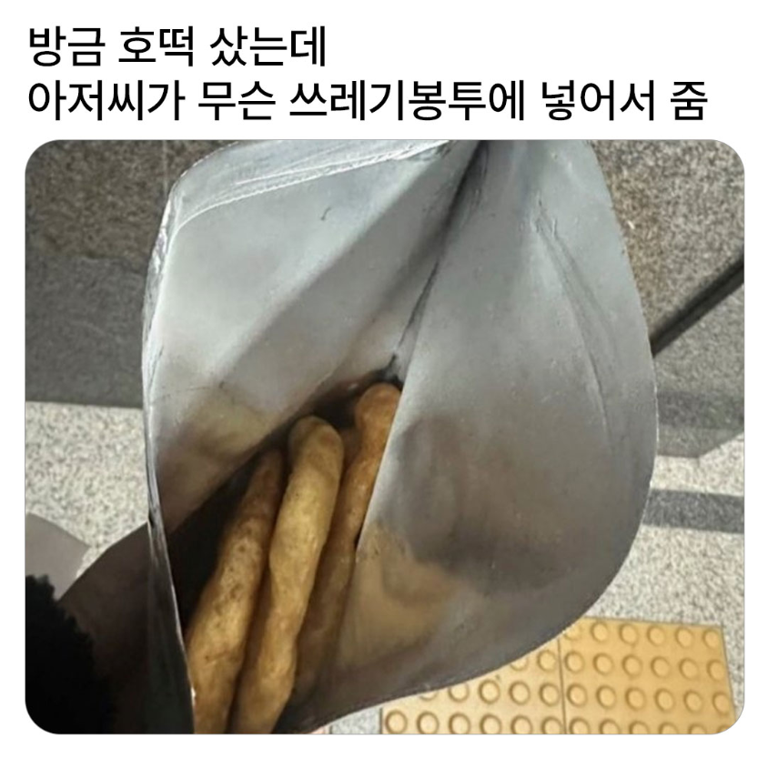
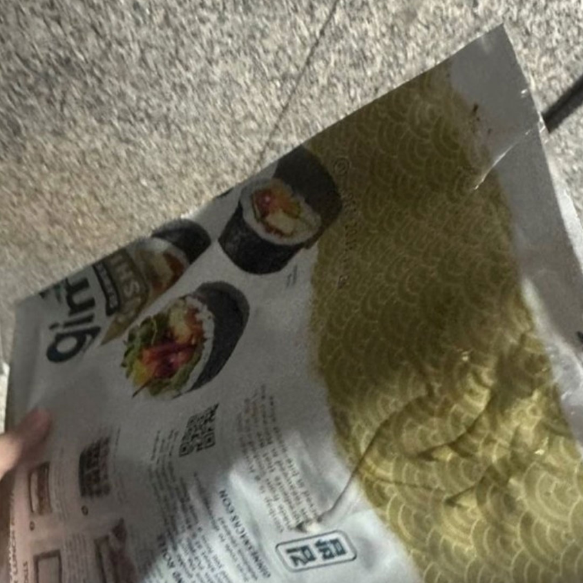
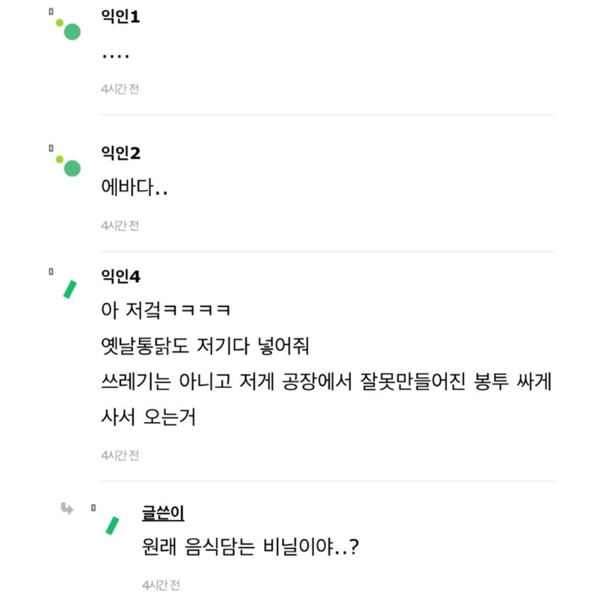
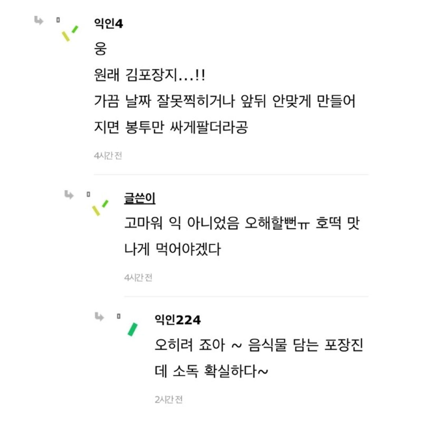
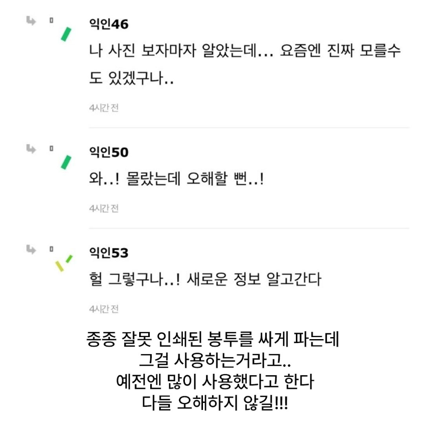

닭강정도 이런 봉투에 담아줬었지





닭강정도 이런 봉투에 담아줬었지
호떡은 종이컵에만 받아봤는데
저런봉투에는 전기구이통닭
애기들은 모르는구나 귀하게 컸네
응애!
저거 빵봉지도 있고 생각보다 여러가지 많음.
저런봉투에는 전기구이 통닭 주로담고
호떡은 거의 갱지로된 종이봉투에 담지않았나
저봉투도 은근 가격나가서 저따가 호떡담기엔 단가가 안맞았을건데
에?? 신문지나....달력이 아니였...어??
요즘은 신문 보는 사람이 없어서 신문지도 비쌀듯...
한국 신문지는 워낙 고품질이라 해외수출이 많이 돼서 린도린도 영상에 나올정도라ㅜ 국내에서는 보기 힘들듯
잘 하는 집이네
예전에는 몰랐는데 저거 봉투 1장당 가격이 생각보다 싸진 않은데
제조원관리라든가 제조일자, 생산일자 등 제품봉투 표기에 관련해서 법이 엄격한편이라 만들어놓고 사용못하는 봉투들이 많이 나오는거 알고 저런데에서 저걸 사용하는 이유가 납득갔었음 ㅋㅋㅋ
트럭 전기구이 통닭 샀을 때 저런 비닐봉투에 넣어주더라. 나는 한미약품 약 비닐이었는데
빳빳한 종이 반 접어서 잡고먹으라고 주는거 아니었어?
생전 첨 보는데
호떡은 안 받아봤지만 오랜만에 보네ㅋㅋㅋ안 뜨겁고 좋지않나?
신문지 아니었어???
뭐여 여초 나이대 높다면서 저긴또 아닌갑네
울집 앞 떡볶이 집에서도 저기에 담아줬는데.
신문지나 갱지, 두꺼운 도화지 종류는 많이 받아봤는데 저런건 처음보네
우리 동네 트럭 통닭도 저런 거에 담아줌ㅋㅋ
처음본다 갈색 종이봉투가 국룰 아닌가
호떡, 붕어빵, 계란빵 먹고 싶네 ㅋㅋㅋ
원래 흰색 종이봉투가 기본 아니였어..?
핫도그 여러개사면 저기담아줬는데 ㅋㅋㅋㅋ
와 근데 근 20년간 처음보는거같음 진짜 어릴때나 봤는데
ㄹㅇ 처음봤음
저 봉투에 받으면 꼭 설탕물이 바닥으로 새서 손이 다 끌적해졌지
어릴때 그냥 신문지에 담아줘서 봉어빵에 잉크토핑 추가돼서 좋았음
신문지보다 낫다고 봄
전기통닭 저런거에넣어줫엇지 ㅋㅋㅋㅋㅋ
우리동네도 저렇게 하는데
맨날 보던 봉투가 그 bts 김 봉투였음ㅋㅋㅋㅋ
예전에 붕어빵 저런거에 담아 줬었는데ㅋㅋ
세대차이ㅋㅋㅋ나름 효율적이였음 기름도 안묻고
저 봉투 쓰던 치킨집 맛집이었는데...ㅠㅠ
요즘은 유난스럽게 담아놓은 뒤에 한지로 포장해서 끈까지 매줘야만 “아 맛있는걸 샀구나” 하지
첨보는데
처음봣음 ㄹㅇ ㅋㅋ
뭐야 근본이잖아
사바사인거 봐서는 어디에선 자주쓰고 어디에선 자주 안 썼나보네 나도 첨봄.
93 경북
저런데에 넣어주는거 처음보는데 연배가 어떻게 되어야 저걸 본거임?
저런게 맛집인데
옛날 닭집 닭꼬치도 저기ㅜ포장해주고
나도 전기구이 통닭 말고 호떡을 저기에 담아주는건 첨 본다 ㅋㅋ
처음보는데 우리 지역에는 없었던던가? 중앙에 붕어빵같은거 인쇄된 종이밖애 못봄
전기구이통닭 먹고싶네
통닭도 저런거에 담아줬었는데
저런봉투가 오히려 고급이지 싼종이봉투나 신문지는..
김장
포지